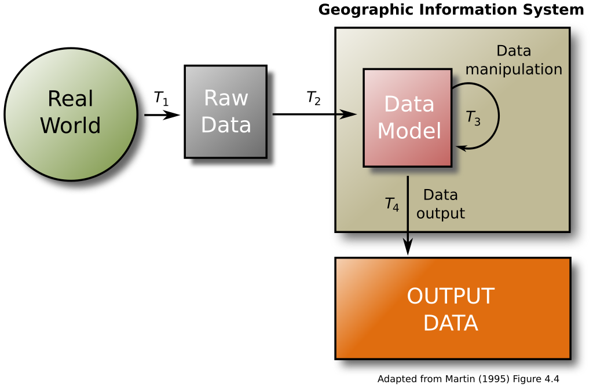

Hii! It's GIS CLUB messaging assistant again.
Is this what you need help with?

A geographic information system (GIS) consists of various tools that allow us to analyze spatial data. 
GIS software supports storing, retrieving, and visualizing spatial data for analysis.

The core of any GIS is a database that contains spatially referenced data used for mapping and analysis.
The degree to which a data set represents all of the actual phenomena it is intended to represent.
The most recent point in time at which a data set is still considered valid.
This process converts raster data into vector data, allowing for more precise spatial analysis.
Spatial ETL tools support extracting, transforming, and loading spatial data between various GIS platforms.
Hii! It's GIS CLUB messaging assistant again.
Is this what you need help with?